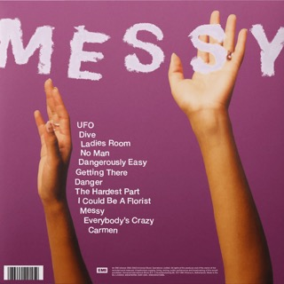
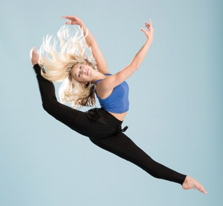

These are a few artists who inspire me:
Olivia Dean

I discovered her about three years ago and ever since, her discography and the variety within it have continued to inspired me. Olivia Dean's music
contains a mix of genres, though it is primarily pop-soul/R&B, yet she does have songs with folk, jazz, and blues elements. Additionally, the visual
marketing of her songs and brand are also aesthetically appealing as well. Within her songs, there are common elements of infatuation, insecurity, and independence.
The closing song from her 2023 debut Messy album titled "Carmen" was written as a dedication to her late grandmother bearing the same name as the track, which I heavily
resonate with as someone who had a close bond to my grandmother who then passed.
Briar Nolet

Being a former dancer myself (though I occasionally stumble back into the practice), I found myself fascinated by the
style of actress Briar Nolet. Within the show, and seemingly real life, her main dance styling is contemporary dance
which is known to be a more softer, slower side of interpretive dance. Funnily enough, during my dancing years, I also
and to this day believe contemporary dance to be my main style. Seeing someone in a space I could relate to and who could
harness the skill of communication through movement rather than words was motivating. Since her stint on the show, I've kept
up with her through socials and see she still keeps up with dance.
Salvacion Lim Higgins aka Slim

Being of Filipino heritage myself, I find that I constantly take aspects of my culture in mind when I am working on projects.
This could be anything from visual inspiration to learned community beliefs/morals (such as the principle of inclusivity).
Salvacion is a designer I gained interest in upon researching for a former class project. She took the fashion industry by storm
with her innovative and out-of-ordinary designs, pushing the boundaries of her creativity. She would then go on to be the founder
of her own fashion institute in the Philippines entitled The Slim's Fashion and Arts School that still exists to this day!
Having that cultural connection with her not only shows me what's possible for someone in our community, but also serves as a reminder
the resilience I believe my community has. Creative media within the Philippines is typically celebrated through hobbies, however, it is
shunned upon if pursued career-wise. Yet, a figurehead like Salvacion herself instills confidence in myself and thus provides me with inspiration
and creativity to use throughout my design journey.